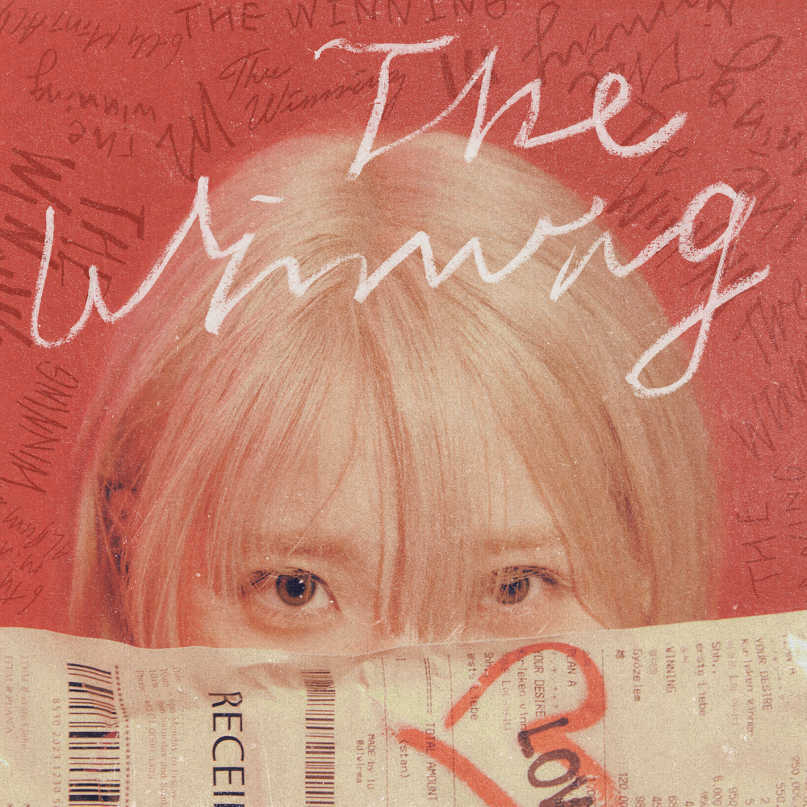

안녕하세요 라보엠입니다.
아이유의 6번째 미니앨범 The Winning 이 2024년 2월 20일 발매되었습니다. 발매와 함께 신곡 Shopper 의 뮤직비디오가 공개되었습니다. 강렬한 락비트와 함께 한 편의 영화를 보는 듯한 느낌을 주는 뮤직비디오입니다.
아이유 IU Shopper MV
Release Note
IU 6th Mini Album [The Winning]
Shopper
Lyrics by 아이유 / Composed by 이종훈, 이채규 / Arranged by 이종훈, 이채규
영원히 문 닫지 않는 가게에서 자신만의 취향과 기준으로 원하는 것을 쓸어 담는 쇼퍼들의 이야기.
그들이 카트에 담는 물건은 아주 개인적이다. 남들의 기준, 세상의 기준으로 보기에 너무 시시하거나 혹은 과하거나 어쩌면 요상하거나 그다지 가치롭지 않은 것들일 수도 있다. 하지만 쇼퍼들은 개의치 않는다. 자신이 진정으로 원하는 것을 깨닫기 위해 몸소 귀 기울이고 스스로를 행복하게 만들어줄 물건을 정확히 고르는 그들은, 본인의 욕망과 취향을 양껏 카트에 담으며 만족스러울 뿐이다.
이 샵에서 본인 욕망의 가치에 대한 가격표는 오직 쇼퍼 본인이 단다. 그 선택이 가치로운지 아닌지는 오롯이 그가 판단한다.
내가 쇼퍼로서 카트에 담은 것들은 2022년 ‘The Golden Hour : 오렌지 태양 아래’ 공연에서 마주했던 감정과 순간들이다. 나는 그 공연에서 나로서는 다소 낯선 결의 욕망들을 강하게 느꼈다.
일에 있어 약간의 번아웃을 느끼던 와중에 마주한 그 이틀간의 공연은 미리 준비 중이었던 이 앨범의 주제와 분위기, 그리고 그것에 임하는 나의 에너지 자체를 싸그리 뒤집어 놓았다. 쉽고 편한 것은 잠시 뒤로 하고 다시 한번 쏟아내듯 도전하고 싶어졌다. 번아웃이라는 걸 인정하지 못한 채 같은 자리를 빙빙 돌며 차일피일 앨범의 마무리를 미루던 내 머릿속을 명료하게 정리해 준 것은 그 더운 밤의 관객들이었다.
수만 명의 소리가 한 사람의 목소리처럼 또렷이 내 안에 들어와 새로운 욕심들을 깨웠다. 그로 인해 내가 느꼈던 용기와 벅참을 이 곡에 욱여 담았다. 이번에는 내 목소리가 이 곡을 듣는 이들에게 ‘자신이 원하는 것에 확신을 가질 용기’가 되길 바란다.
강렬한 사운드의 Electro-Pop Rock 트랙.
시원한 기타 사운드를 기반으로 다양한 transition들이 쉴 새 없이 귀를 자극한다.
아이유의 보컬은 곡 내내 절제와 발산을 반복하며 머릿속에서 탄산이 터지는 듯한 재미를 선사한다.
곡 중간중간 재기발랄하게 가미된 FX 소스들이 마치 마켓에서 쇼핑을 하는 듯한 신나는 기분을 더한다.
아이유 Shopper 가사
아직도 난 더 가지고 싶어
(Yeah I want more I'll get it more, more)
설레는 게 이렇게나 많은 걸
(Oh I want all I must have all, all)
저녁 일곱시 노을의 팔레트
(I need it, course I'll take it, course, course)
가슴 터질 듯 내 이름을 외치는 목소리
(Oh it's so worth It's more than what, what)
빼곡히 적은 wish list 빠짐없이 가질 때까지
(Take what you want No matter who calls you a freak)
설명할 필요 없어
나 그때와는 다른 걸 원해, 원해
Let's go haul
더 미어터질 만큼 다 채워
Look around
시간은 짧아 더 빨리 가져
(Shop all day, ay Greed is free, ay)
Go Make your own
가지러 태어난 것처럼
이 샵은 문 닫지 않아 늘, 영원히
2.
마지막 소절 숨의 첫 모금
(It's time to show Go, make it sure, sure)
승리를 앞둔 마음이 달릴 때 내는 소리
(It's time to go I'll make my goal, goal)
내게는 없어 plan B 모조리 내 것이 될 때까지
(Take what you want No matter who puts down you're greed)
적당히로는 안돼
난 훨씬 더 대담한 걸 원해, 원해
Let's go haul
더 미어터질 만큼 다 채워
Look around
시간은 짧아 더 빨리 가져
이 샵은 문 닫지 않아, 봐
필요 없는 건 없어
for my Victory, even your jealousy
나 이제껏 모르던
세상을 욕심 내볼래
Let's go haul
더 미어터질 만큼 다 채워
Look around
시간은 짧아 더 빨리 가져
Shop all day, ay
Greed is free, ay
Go Make your own
가지러 태어난 것처럼
이 샵은 문 닫지 않아
늘, 영원히

이번 6집 앨범은 스페셜버젼으로 트위티와 콜라보한 앨범이 화제가 되었는데요, 저도 예약 구매를 했습니다.
아이유 (IU) - 미니앨범 6집 : The Winning [Special ver.] - 예스24
** 앨범 소개 추후 공개 **
www.yes24.com
미국에 테일러 스위프트가 미국의 경제를 이끌 정도로 영향력이 커졌는데요, 아이유도 테일러 스위프트처럼 한국의 경제에도 영향을 주는 아티스트가 되길 기대해봅니다.
[자막뉴스] '움직이는 미국 경제' 테일러 스위프트, 공연장 함성에 지진까지...
테일러 스위프트의 순회공연 '에라스 투어'가 올해 미국 G...
www.ytn.co.kr